Contents
% options_pub.outputDir=fullfile(pwd,'latex','228','html'); options_pub.showCode=true; % publish(fullfile(pwd,'cal_report_228a2.m'),options_pub);
Brewer Setup
clear all; file_setup='arenos2019_setup'; eval(file_setup); % configuracion por defecto Cal.n_inst=find(Cal.brw==228); Cal.file_latex=fullfile('.','latex',Cal.brw_str{Cal.n_inst}); Cal.dir_figs=fullfile('latex',filesep(),Cal.brw_str{Cal.n_inst},... filesep(),[Cal.brw_str{Cal.n_inst},'_figures'],filesep()); mkdir(Cal.dir_figs); try save(Cal.file_save,'-Append','Cal'); %sobreescribimos la configuracion guardada. load(Cal.file_save); catch exception fprintf('Error: %s\n Initializing data for Brewer %s\n',exception.message,Cal.brw_name{Cal.n_inst}); save(Cal.file_save); end load(Cal.file_save,'temperature'); load(Cal.file_save,'filter');
ans =
1×1 cell array
{'IZO#185'}
ans =
20×9 cell array
Columns 1 through 5
{'TSK#005'} {[ 5]} {[2]} {[0]} {'005'}
{'IOS#017'} {[ 17]} {[2]} {[0]} {'017'}
{'SCO#033'} {[ 33]} {[2]} {[0]} {'033'}
{'MAD#070'} {[ 70]} {[4]} {[0]} {'070'}
{'UK_#075'} {[ 75]} {[4]} {[0]} {'075'}
{'MUR#117'} {[117]} {[4]} {[0]} {'117'}
{'UK_#126'} {[126]} {[4]} {[0]} {'126'}
{'ARE#150'} {[150]} {[3]} {[0]} {'150'}
{'COR#151'} {[151]} {[4]} {[0]} {'151'}
{'K&Z#158'} {[158]} {[3]} {[0]} {'158'}
{'WRC#163'} {[163]} {[3]} {[0]} {'163'}
{'ZAR#166'} {[166]} {[4]} {[0]} {'166'}
{'UK_#172'} {[172]} {[3]} {[0]} {'172'}
{'JAP#174'} {[174]} {[3]} {[0]} {'174'}
{'IZO#185'} {[185]} {[3]} {[0]} {'185'}
{'MAD#186'} {[186]} {[3]} {[0]} {'186'}
{'CAN#190'} {[190]} {[3]} {[0]} {'190'}
{'TAM#201'} {[201]} {[3]} {[0]} {'201'}
{'DNK#202'} {[202]} {[3]} {[0]} {'202'}
{'DNK#228'} {[228]} {[3]} {[0]} {'228'}
Columns 6 through 9
{'..\005\ICF15117…'} {'..\005\ICF15117…'} {'1838'} {'1838'}
{'..\017\ICF14919…'} {'..\017\ICF14919…'} {'1680'} {'1680'}
{'..\033\ICF15617…'} {'..\033\IOS15617…'} {'2325'} {'2325'}
{'..\070\ICF15617…'} {'..\070\IOS15617…'} {'1685'} {'1685'}
{'..\075\ICF15017…'} {'..\075\ICF15017…'} {'1714'} {'1714'}
{'..\117\ICF15517…'} {'..\117\IOS15517…'} {'1620'} {'1620'}
{'..\126\icf15517…'} {'..\126\ICF17419…'} {'1710'} {'1710'}
{'..\150\ICF15617…'} {'..\150\ICF15617…'} {'0322'} {'0322'}
{'..\151\ICF15317…'} {'..\151\IOS15317…'} {'1880'} {'1880'}
{'..\158\ICF21218…'} {'..\158\ICF21218…'} {'0558'} {'0558'}
{'..\163\ICF23318…'} {'..\163\ICF23318…'} {'0274'} {'0274'}
{'..\166\ICF15217…'} {'..\166\ICF17419…'} {'1955'} {'1955'}
{'..\172\ICF15117…'} {'..\172\ICF15117…'} {'0444'} {'0444'}
{'..\174\ICF20718…'} {'..\174\ICF20718…'} {'0605'} {'0605'}
{'..\185\config18…'} {'..\185\config18…'} {'0365'} {'0367'}
{'..\186\ICF15317…'} {'..\186\IOS15317…'} {'0315'} {'0315'}
{'..\190\ICF11419…'} {'..\190\ICF11419…'} {'0410'} {'0410'}
{'..\201\ICF14315…'} {'..\201\ICF14315…'} {'0320'} {'0320'}
{'..\202\ICF15017…'} {'..\202\ICF15017…'} {'0270'} {'0270'}
{'..\228\ICF15017…'} {'..\228\ICF17319…'} {'0242'} {'0242'}
configuration files
close all;
[config_def,TCdef,DTdef,ETCdef,A1def,ATdef]=read_icf(Cal.brw_config_files{Cal.n_inst,2});
[config_orig,TCorig,DTorig,ETCorig,A1orig,ATorig]=read_icf(Cal.brw_config_files{Cal.n_inst,1});
config_temp.n_inst=Cal.n_inst;
config_temp.brw_name=Cal.brw_name{Cal.n_inst};
config_temp.final_days=Cal.Date.FINAL_DAYS(1);
NTC={}; tabla_regress={}; ajuste={}; Args={};
ans =
'22-Jun-2019'
Temperature dependence. During campaign
[sl_rw,tc]=readb_sl_rawl(fullfile('.','bfiles',['B*.',Cal.brw_str{Cal.n_inst}]));% cambio nombres para poder seguir if ~isnan(sl_rw)
[NTC{1},ajuste{1},Args{1},Fr]=temp_coeff_raw(config_temp,sl_rw,'outlier_flag',0,...
'date_range',datenum(Cal.Date.cal_year,1,Cal.calibration_days{Cal.n_inst,1}([1 end])));
disp(sprintf(' ORIG MS9: %5.0f +/-%2.0f %3.1f +/- %3.2f ',ajuste{1}.orig(7,[1 3 2 4])));
disp(sprintf(' NEW MS9: %5.0f +/-%2.0f %3.1f +/- %3.2f ',ajuste{1}.new(7,[1 3 2 4])));
--------- Validation OK -------------- List of arguments given default values: 'plots' defaults to 1 'plot_flag' defaults to 0 'intensity_flag' defaults to 0 'temp_flag' defaults to [] 'TCB' defaults to [] 'N_TC' defaults to [] -------------------------------------- ORIG MS9: 305 +/- 1 1.2 +/- 0.04 NEW MS9: 305 +/- 3 0.1 +/- 0.10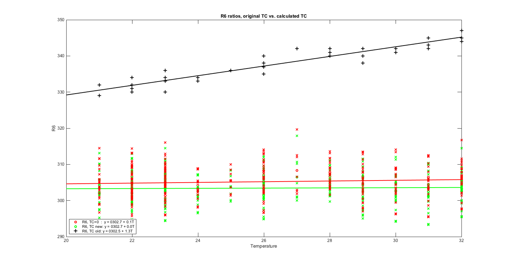 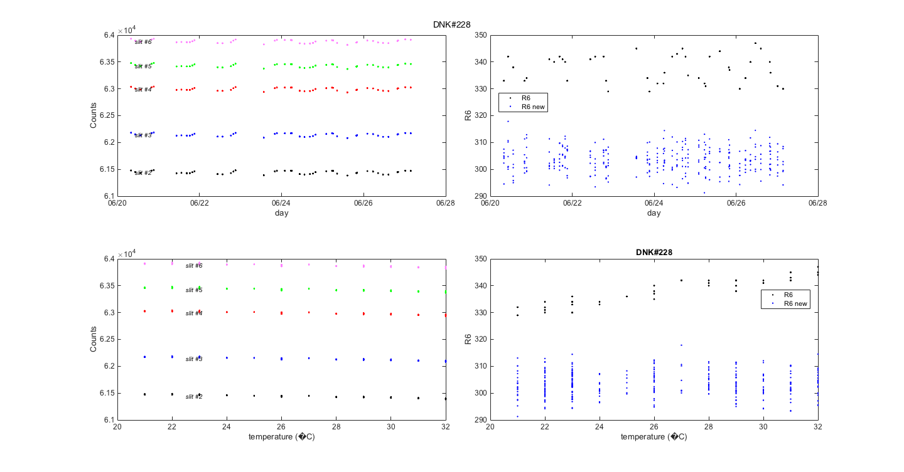 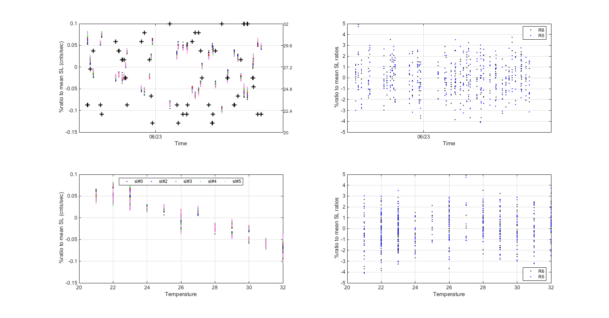 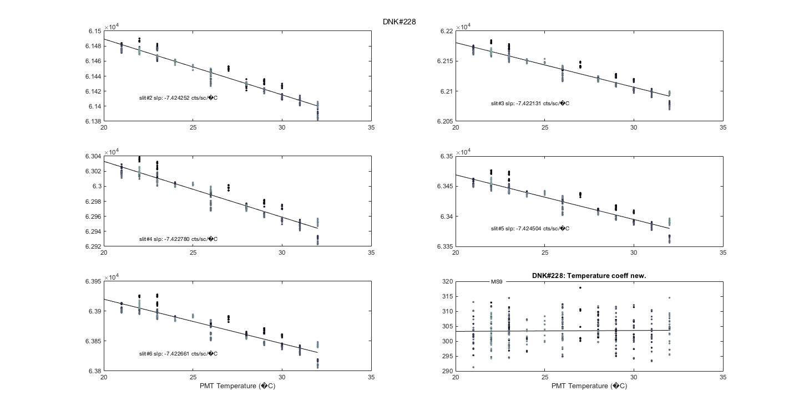
makeHtmlTable([ajuste{1}.cero(:,[1 3]) ajuste{1}.cero(:,[2 4])],[],...
{'slit#2','slit#3','slit#4','slit#5','slit#6','R5','R6'},{'a','a SE','b','b SE'},[],4);
| a | a SE | b | b SE | |
| slit#2 | 6.165e+04 | 4.302 | -7.715 | 0.1634 |
| slit#3 | 6.234e+04 | 4.759 | -7.46 | 0.1807 |
| slit#4 | 6.319e+04 | 5.289 | -7.479 | 0.2009 |
| slit#5 | 6.363e+04 | 5.663 | -7.481 | 0.2151 |
| slit#6 | 6.408e+04 | 6.104 | -7.466 | 0.2318 |
| R5 | 541.8 | 4.749 | 0.2061 | 0.1804 |
| R6 | 304.8 | 2.596 | 0.01306 | 0.09861 |
makeHtmlTable(NTC{1});
| 0 | -0.25 | -0.24 | -0.23 | -0.25 |
else Fr=NaN*ones(1,9); ajuste{1}.orig=NaN*ones(7,4); ajuste{1}.cero=NaN*ones(7,4); ajuste{1}.new=NaN*ones(7,4); end
processing sl files: 100% [..........] sl raw done
Check previous results
if exist('sl_raw','var') if iscell(sl_raw) && size(sl_raw,2)>=Cal.n_inst if isempty(sl_raw{Cal.n_inst}) [sl_raw{Cal.n_inst},TC{Cal.n_inst}]=readb_sl_rawl(fullfile(['bdata',Cal.brw_str{Cal.n_inst}],... ['B*.',Cal.brw_str{Cal.n_inst}]),'f_plot',1); save(Cal.file_save,'-APPEND','sl_raw','TC'); end else [sl_raw{Cal.n_inst},TC{Cal.n_inst}]=readb_sl_rawl(fullfile(['bdata',Cal.brw_str{Cal.n_inst}],... ['B*.',Cal.brw_str{Cal.n_inst}]),'f_plot',1); save(Cal.file_save,'-APPEND','sl_raw','TC'); end else [sl_raw{Cal.n_inst},TC{Cal.n_inst}]=readb_sl_rawl(fullfile(['bdata',Cal.brw_str{Cal.n_inst}],... ['B*.',Cal.brw_str{Cal.n_inst}]),'f_plot',1); save(Cal.file_save,'-APPEND','sl_raw','TC'); end
SL summary from bfiles temperature
figure; set(gcf,'Tag','DailySL'); hl1=ploterr(TC{Cal.n_inst}(1,:),TC{Cal.n_inst}(2,:),[],TC{Cal.n_inst}(3,:),'*k'); set(hl1,'LineWidth',2); ylabel('SL double ratio MS9'); title(sprintf('Daily means for sl ozone ratio & temperature. Brewer %s\r\n (from bfile sl summaries)',Cal.brw_name{Cal.n_inst})); set(gca,'XTickLabels',datestr(get(gca,'XTick'),2)); grid; ax(1)=gca; set(ax(1),'Position',[0.1 0.12 0.75 0.72]);% [left bottom width height] xtickangle(gca,30); ax(2)=axes('Position',get(ax(1),'Position'),... 'XAxisLocation','top',... 'YAxisLocation','right',... 'Color','none','FontSize',10,... 'XColor','k','YColor','b'); set(ax,'box','off'); hold on; hl2=ploterr(TC{Cal.n_inst}(1,:),TC{Cal.n_inst}(7,:),[],TC{Cal.n_inst}(8,:),'*b'); set(hl2,'LineWidth',2); set(gca,'XTicklabels',[],'YLim',[0 45]); ylb=ylabel('Temperature','Rotation',-90); pos=get(ylb,'Position'); pos(1)=pos(1)+3; set(ylb,'Position',pos);
[NTC{2},ajuste{2},Args{2},Fraw,Fnew]=temp_coeff_raw(config_temp,sl_raw{Cal.n_inst},'outlier_flag',1,...
'date_range',datenum(Cal.Date.cal_year-2,7,15)); % two years before calibration
%'date_range',datenum(Cal.Date.cal_year,1,[1,Cal.calibration_days{Cal.n_inst,1}(1)]));
%this year data
% figure(maxf(findobj('Tag','TEMP_OLD_VS_NEW'))); set(gca,'YLim',[1750 1920]);
disp(sprintf(' ORIG MS9: %5.0f +/-%2.0f %3.1f +/- %3.2f ',ajuste{2}.orig(7,[1 3 2 4])));
disp(sprintf(' NEW MS9: %5.0f +/-%2.0f %3.1f +/- %3.2f ',ajuste{2}.new(7,[1 3 2 4])));
--------- Validation OK -------------- List of arguments given default values: 'plots' defaults to 1 'plot_flag' defaults to 0 'intensity_flag' defaults to 0 'temp_flag' defaults to [] 'TCB' defaults to [] 'N_TC' defaults to [] -------------------------------------- ORIG MS9: 215 +/- 0 1.1 +/- 0.01 NEW MS9: 215 +/- 0 0.1 +/- 0.02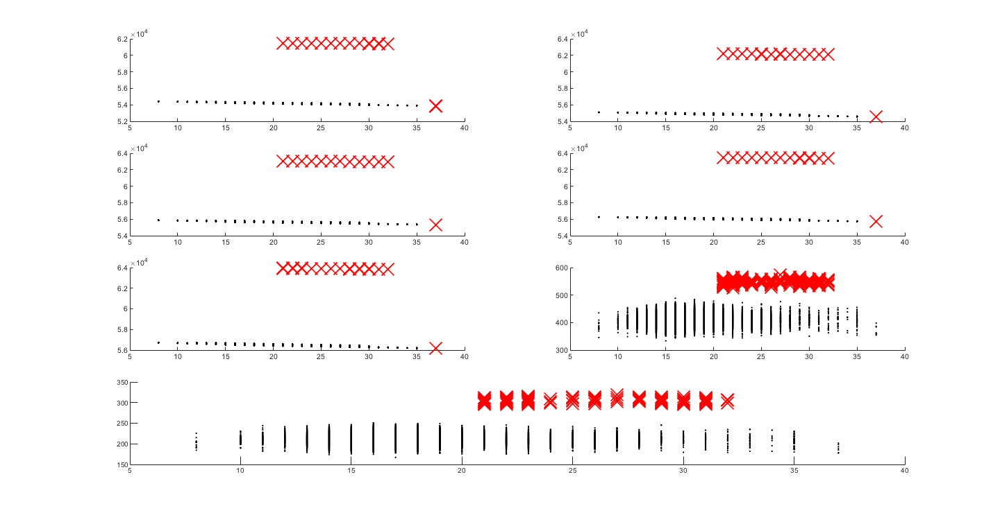 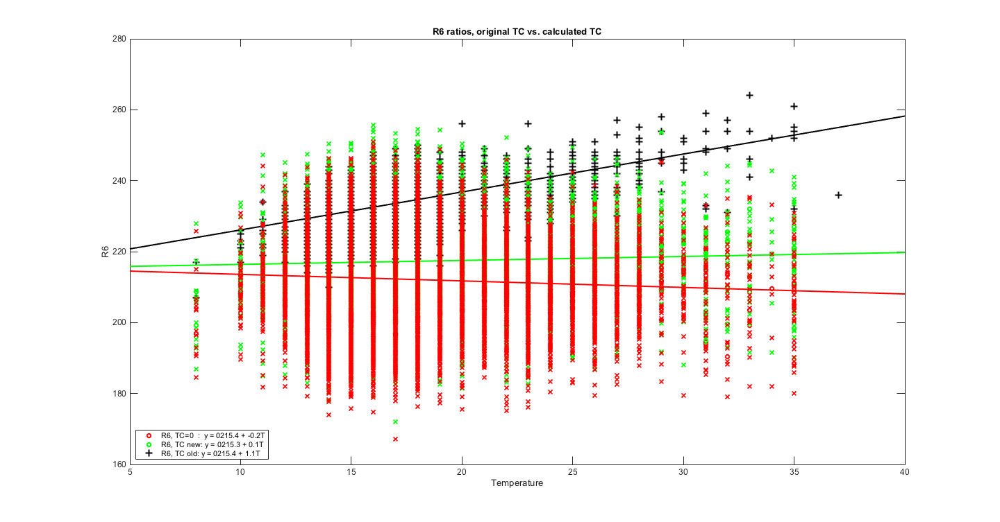 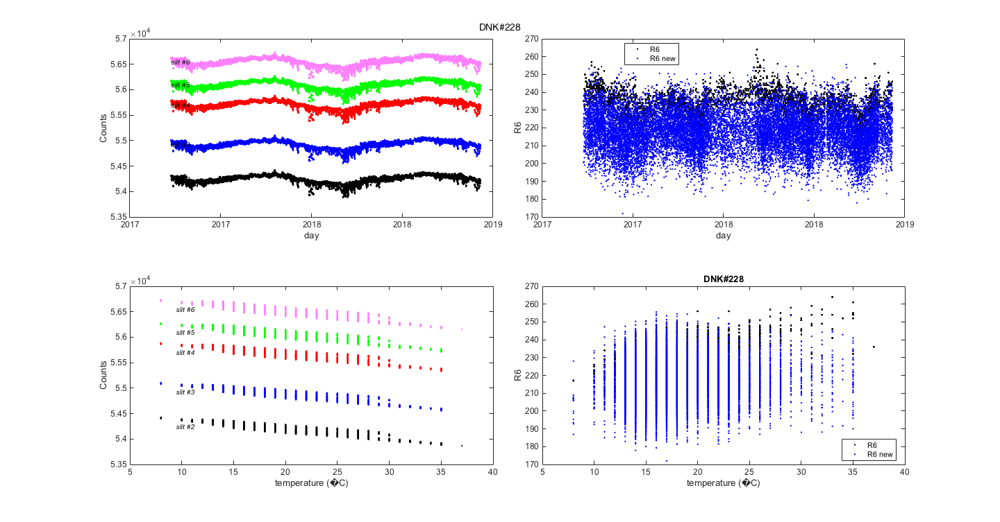 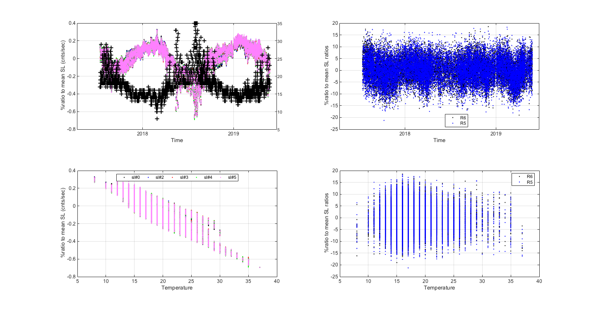 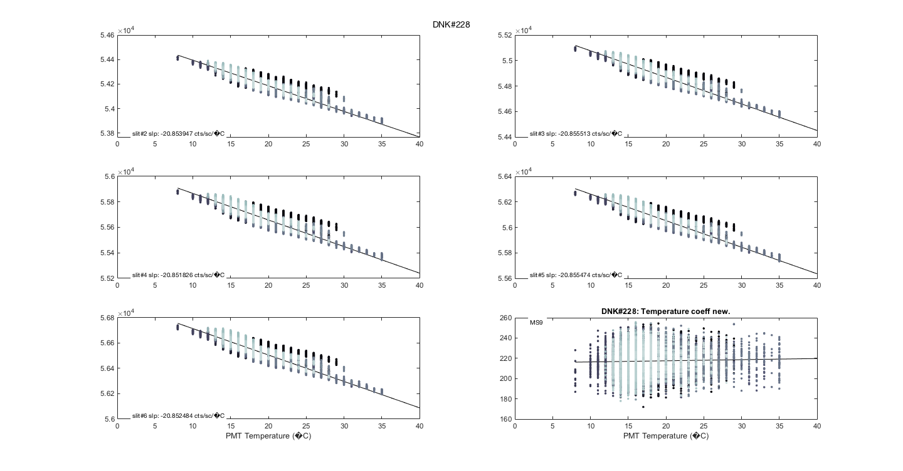
tc_reg_table=makeHtml_Table([ajuste{2}.cero(:,[1 3]) ajuste{2}.cero(:,[2 4])],[],...
{'slit#2','slit#3','slit#4','slit#5','slit#6','R5','R6'},{'a','a SE','b','b SE'},[],4)
temperature{Cal.n_inst}.regression_table=tc_reg_table;
tc_reg_table =
7×4 table
a aSE b bSE
______ _______ _________ ________
slit_2 54603 1.1682 -20.854 0.066076
slit_3 55285 1.2393 -20.846 0.070103
slit_4 56075 1.3054 -21.142 0.073841
slit_5 56470 1.3422 -21.425 0.075923
slit_6 56923 1.3762 -21.512 0.07784
R5 412.61 0.71248 -0.023929 0.040278
R6 215.43 0.39537 -0.18406 0.022351
tc_coeff_table=makeHtml_Table(NTC{2})
temperature{Cal.n_inst}.coeff_table=tc_coeff_table;
tc_coeff_table =
1×5 table
M1 M2 M3 M4 M5
__ _____ ____ ____ ____
0 -0.01 0.29 0.57 0.66
Check changes
[NTCx,ajustex,Argsx,Fraw,Forig]=temp_coeff_raw(config_temp,sl_raw{Cal.n_inst},'outlier_flag',1,'plots',0,...
'N_TC',TCorig(1:5)','date_range',datenum(Cal.Date.cal_year-2,1,[Cal.calibration_days{Cal.n_inst,1}(1)]));
Forigx=Forig; Fn=Fnew;
figure; set(gcf,'Tag','TEMP_COMP_DATE');
plot(Forigx(:,1),Forigx(:,2),'b.','MarkerSize',6);
ylabel('Temperature','Color','b'); ax(1)=gca; set(ax(1),'YAxisLocation','right','XTicklabels',{' '});
[mn,sn]=grpstats(Forigx(:,[1,end,2]),{year(Forigx(:,1)),fix(Forigx(:,1)/7)*7},{'mean','sem'});
[mt,st]=grpstats(Fn(:,[1,end]),{year(Fn(:,1)),fix(Fn(:,1)/7)*7},{'mean','sem'});
ax(2) = axes('YAxisLocation','left','Color','none');
hold all; errorbar(mn(:,1),mn(:,2),sn(:,2),'Color','k','Marker','s');
errorbar(mt(:,1),mt(:,2),st(:,2),'Color','g','Marker','s');
errorbar(mt(:,1),mt(:,2),st(:,2),'Color','g','Marker','s');
title(['R6 Temperature dependence Brewer#', Cal.brw_str{Cal.n_inst}]); ylabel('Standard Lamp R6 ratio');
datetick('x',6,'KeepTicks','KeepLimits'); grid on;
lg=legend(ax(2),'Old temperature coeff','New temperature coeff','Location','best');
set(lg,'HandleVisibility','Off'); set(findobj(lg,'Type','text'),'FontSize',7,'HandleVisibility','Off');
linkprop(ax,{'Position','XTick'});
figure; set(gcf,'Tag','TEMP_COMP_TEMP')
[mn,sn]=grpstats(Forigx(:,[2,end]),Forigx(:,2),{'mean','sem'});
[mt,st]=grpstats(Fn(:,[2,end]),Fn(:,2),{'mean','sem'});
hold on; errorbar(mn(:,1),mn(:,2),sn(:,2),'Color','k','Marker','s');
errorbar(mt(:,1),mt(:,2),st(:,2),'Color','g','Marker','s'); grid;
lg=legend('Old temperature coeff','New temperature coeff','Location','best');
set(lg,'HandleVisibility','Off'); set(findobj(lg,'Type','text'),'FontSize',7,'HandleVisibility','Off');
title(['R6 Temperature dependence Brewer#', Cal.brw_str{Cal.n_inst}]);
ylabel('Standard Lamp R6 ratio'); xlabel('Temperature'); set(gca,'Box','On');
plot(mn(:,1),mn(:,2),'k.',mt(:,1),mt(:,2),'g.')
robust_line
--------- Validation OK -------------- List of arguments given default values: 'plot_flag' defaults to 0 'intensity_flag' defaults to 0 'temp_flag' defaults to [] 'TCB' defaults to [] --------------------------------------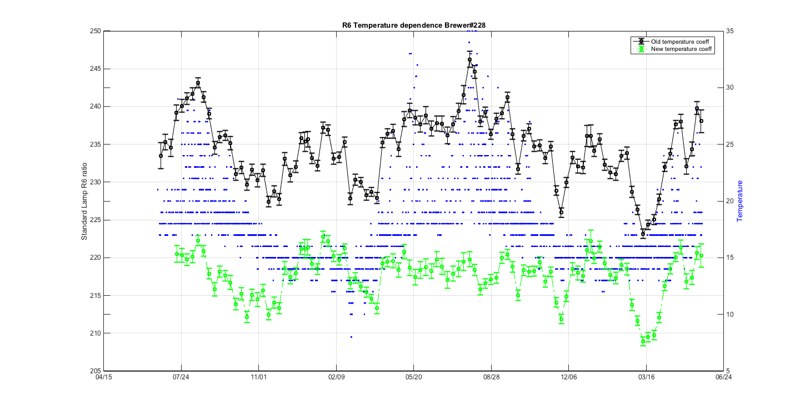 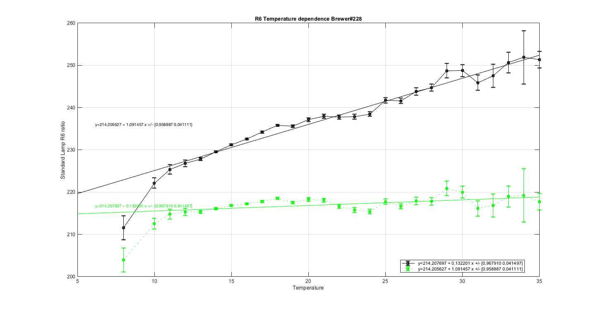
ix=sort(findobj('tag','TEMP_COEF_DESC')); printfiles_report(ix',Cal.dir_figs,'aux_pattern',ix,'Width',15,'Height',7,'LockAxes',0,'no_export');
% ix=sort(findobj('tag','TEMP_day_new')); % printfiles_report(ix',Cal.dir_figs,'aux_pattern',ix,'Width',14,'Height',9,'LockAxes',0,'no_export'); ix=sort(findobj('tag','TEMP_OLD_VS_NEW')); printfiles_report(ix',Cal.dir_figs,'aux_pattern',ix,'Width',12.5,'Height',6.5); ix=sort(findobj('tag','TEMP_COMP_DATE')); printfiles_report(ix',Cal.dir_figs,'aux_pattern',ix,'Width',12.5,'Height',7,'FontMode','fixed','FontSize',9,'axes',1); ix=sort(findobj('tag','TEMP_COMP_TEMP')); printfiles_report(ix',Cal.dir_figs,'aux_pattern',ix,'Width',12.5,'Height',6.5); close all
naux =
1
figura =
'228_figures_TEMP_OLD_VS_NEW_1'
naux =
2
naux =
1
naux =
1
Latex stuff
% Temperature Range % Para que funcione asignamos la salida Fr en la llamada a la funciÿn % temp_coeff_raw donde se calculen los TC's (en este caso en {}) tmp=Fr(:,2); latexcmd(fullfile(Cal.file_latex,['cal_tempcoeff_',Cal.brw_str{Cal.n_inst}]),... '\tempmin',min(tmp),'\tempmax',max(tmp)); clear tmp; temperature{Cal.n_inst}.sl_raw=sl_raw{Cal.n_inst}; temperature{Cal.n_inst}.NTC=NTC; temperature{Cal.n_inst}.ajuste=ajuste; if exist('Args','var') temperature{Cal.n_inst}.info=Args; else warning('No se estÿn guardando los inputs de la funciÿn!!') end save(Cal.file_save,'-APPEND','temperature'); % Tables tc_table={}; for t=1:length(NTC) tc_table{t}=[round(config_orig(2:6)'*10^4)/10^4 %'Current' NTC{1} %'Calculated' round(config_def(2:6)'*10^4)/10^4]; %'Final' if t==1, t=[]; indx=1; else t=t-1; indx=indx+1; end matrix2latex_ctable(tc_table{indx},... fullfile(Cal.file_latex,['table_TC',num2str(t),'_',Cal.brw_str{Cal.n_inst},'.tex']),... 'RowLabels',{'Current','Calculated','Final'},... 'ColumnLabels',{'slit#2','slit#3','slit#4','slit#5','slit#6'},... 'alignment', 'c','resize',0.8,'format','%7.4f','size','footnotesize'); end tabla_regress={}; for tt=1:length(ajuste) param=ajuste{tt}; if isstruct(param) param=param.new; end absc=mmcellstr(sprintf('%g +/- %g |',round(param([1:5 7],[1,3]))')); slpe=mmcellstr(sprintf('%3.1f +/- %3.2f |',param([1:5 7],[2,4])')); tabla_regress{tt}=cat(2,absc,slpe); if tt==1, tt=[]; indx=1; else tt=tt-1; indx=indx+1; end matrix2latex_ctable(tabla_regress{indx},... fullfile(Cal.file_latex,['table_regress',num2str(tt),'_',Cal.brw_str{Cal.n_inst},'.tex']),... 'RowLabels',{'slit\#2','slit\#3','slit\#4','slit\#5','slit\#6','MS9'},... 'ColumnLabels',{'0 abscissa +/- standard error','slope +/- standard error'},... 'alignment', 'c','resize',0.8,'size','footnotesize'); end
Filter attenuation
[ETC_FILTER_CORRECTION,media_fi,fi,fi_avg]=filter_rep(Cal.brw_str{Cal.n_inst},...
'date_range',datenum(Cal.Date.cal_year-4,1,1),...
'outlier_flag',1,'plot_flag',0,'config',config_orig(17:22));
filter{Cal.n_inst}.ETC_FILTER_CORRECTION=ETC_FILTER_CORRECTION;
filter{Cal.n_inst}.media_fi=media_fi;
filter{Cal.n_inst}.fi=fi;
filter{Cal.n_inst}.ETC_FILTER_COR=round(ETC_FILTER_CORRECTION(2,:).*(sign(ETC_FILTER_CORRECTION(3,:))==sign(ETC_FILTER_CORRECTION(4,:))));
filter{Cal.n_inst}.fi_avg=fi_avg;
o3f=filters_data(filter,Cal);
save(Cal.file_save,'-APPEND','filter');
NFI=size(fi,1);
NFIcamp=length(find(ismember(fi_avg(:,1),datenum(Cal.Date.cal_year,1,Cal.calibration_days{Cal.n_inst,1}))==1));
latexcmd(fullfile(Cal.file_latex,['cal_filter_',Cal.brw_str{Cal.n_inst}]),'\NFI',NFI,'\NFIcamp',NFIcamp);
label_2={'filter #1','filter #2','filter #3','filter #4','filter #5'};
ETC_FILTER_CORR2cell={};
for y=1:5
ETC_FILTER_CORR2cell{1,y}=round(ETC_FILTER_CORRECTION(1,y)*10)/10;
ETC_FILTER_CORR2cell{2,y}=round(ETC_FILTER_CORRECTION(2,y)*10)/10;
ETC_FILTER_CORR2cell{3,y}=sprintf('%c%s %s%c','[',num2str(round(ETC_FILTER_CORRECTION(3,y)*10)/10),num2str(round(ETC_FILTER_CORRECTION(4,y)*10)/10),']');
end
disp(ETC_FILTER_CORR2cell);
matrix2latex_ctable(ETC_FILTER_CORR2cell,fullfile(Cal.file_latex,['table_filter_correction_',Cal.brw_str{Cal.n_inst},'.tex']),...
'rowLabels',{'ETC Filt. Corr. (median)','ETC Filt. Corr. (mean)','ETC Filt. Corr. (mean 95\% CI) '},...
'columnLabels',{'filter\#1','filter\#2','filter\#3','filter\#4','filter\#5'},...
'alignment', 'c','resize',0.8);
label_1={'slit #0','slit #1','slit #2','slit #3','slit #4','slit #5','mean'};
label_2={'filter #1','filter #2','filter #3','filter #4','filter #5'};
% disp([num2cell(media_fi);num2cell(fix(mean(media_fi)))]);
matrix2latex_ctable([num2cell(media_fi);num2cell(fix(mean(media_fi)))],fullfile(Cal.file_latex,['table_filter_',Cal.brw_str{Cal.n_inst},'.tex']),...
'rowLabels',{'slit\#0','slit\#1','slit\#2','slit\#3','slit\#4','slit\#5','mean'},...
'columnLabels',{'filter\#1','filter\#2','filter\#3','filter\#4','filter\#5'},...
'alignment', 'c','resize',0.72);
--------- Validation OK --------------
List of arguments given default values:
'path_to_file' defaults to .
--------------------------------------
Columns 1 through 4
[ -3] [ -12] [ -15] [ -12]
[ 0.4] [ 0.1] [ -13.6] [ -14.7]
'[-15.5 16.6]' '[-22 27.1]' '[-47.3 17.2]' '[-35.5 7.3]'
Column 5
[ -7]
[ -15.3]
'[-46.5 7.2]'
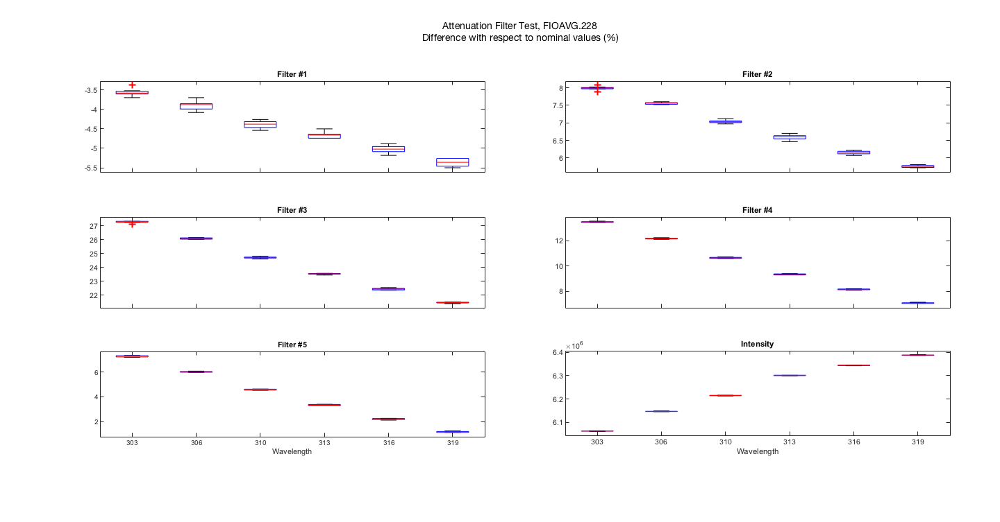 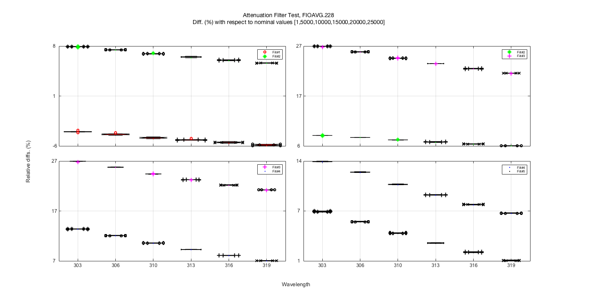 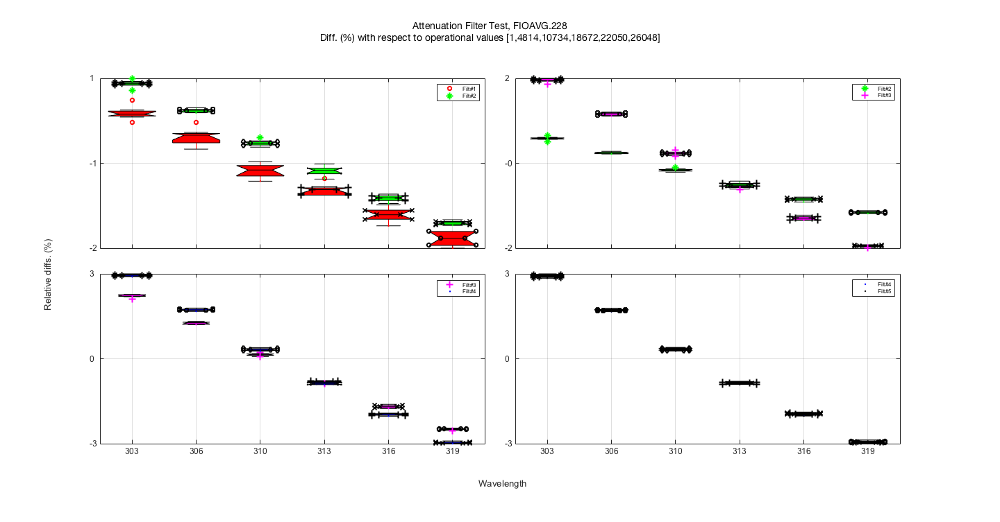 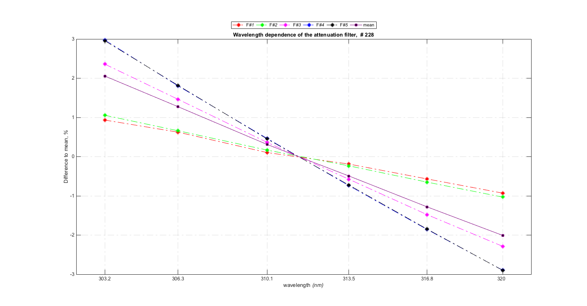 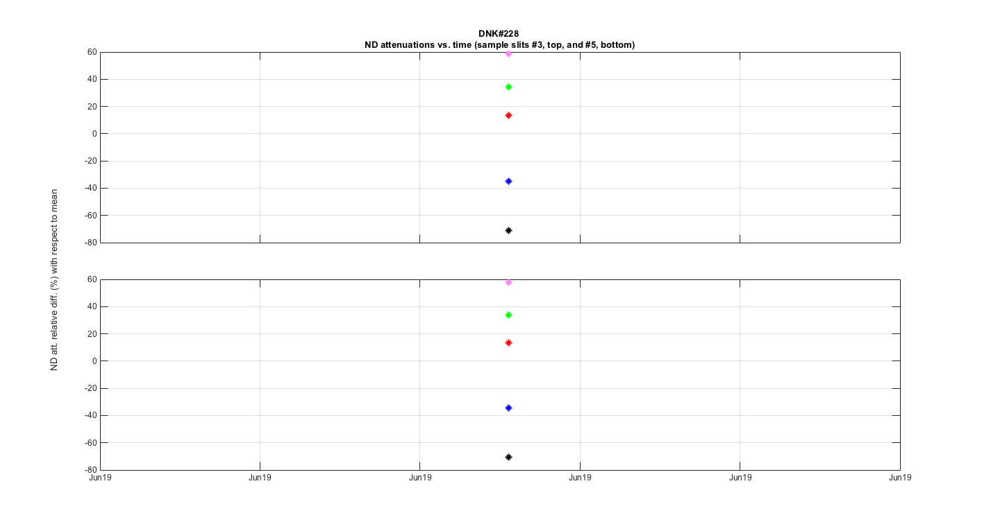 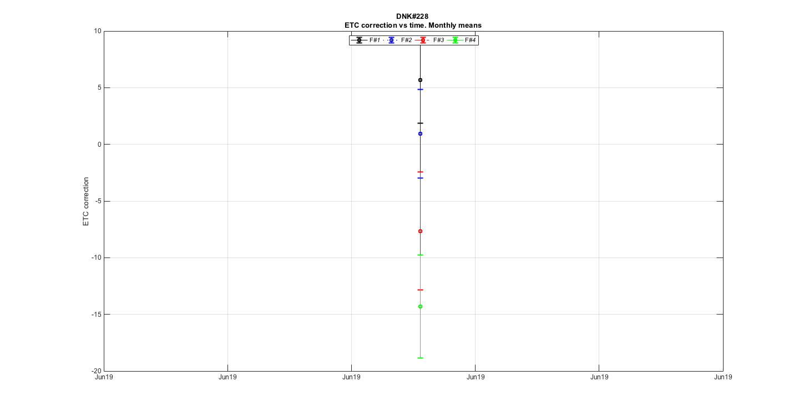 fprintf('\nFI''s analyzed: %d\n',NFI); fi_mean_table=display_table([fix(media_fi);fix(mean(media_fi))],label_2,10,'.5g',label_1) filter{Cal.n_inst}.mean_table=fi_mean_table; % %fprintf('\nFI''s analyzed: %d\n',NFI); fi_etc_table=display_table(ETC_FILTER_CORRECTION,label_2,10,'.5g',{'ETC Filt. Corr. (median)','ETC Filt. Corr. (mean)','ETC Filt. Corr. (CI) ','ETC Filt. Corr.(CI)'}) filter{Cal.n_inst}.etc_table=fi_etc_table; save(Cal.file_save,'-APPEND','filter'); % figure(maxf(findobj('tag','FI_wavelength'))); printfiles_report(gcf,Cal.dir_figs,'Width',13.5); figure(maxf(findobj('tag','FI_STATS'))); printfiles_report(gcf,Cal.dir_figs,'Width',13,'Height',16); ix=sort(findobj('-regexp','Tag','FIOS*\w+')); for ff=ix printfiles_report(ff',Cal.dir_figs,'Width',17,'Height',9); end
FI's analyzed: 16
fi_mean_table =
7×5 table
filter_1 filter_2 filter_3 filter_4 filter_5
________ ________ ________ ________ ________
slit_0 4848 10834 19113 22707 26824
slit_1 4829 10782 18932 22438 26517
slit_2 4803 10730 18720 22132 26162
slit_3 4785 10688 18545 21880 25856
slit_4 4770 10646 18382 21642 25573
slit_5 4757 10616 18240 21431 25314
mean 4798 10716 18655 22038 26041
fi_etc_table =
4×5 table
filter_1 filter_2 filter_3 filter_4 filter_5
________ ________ ________ ________ ________
ETCFilt_Corr__median_ -3 -12 -15 -12 -7
ETCFilt_Corr__mean_ 0.4494 0.099108 -13.554 -14.662 -15.341
ETCFilt_Corr__CI_ -15.481 -22.002 -47.262 -35.519 -46.465
ETCFilt_Corr__CI__1 16.553 27.113 17.227 7.3418 7.232
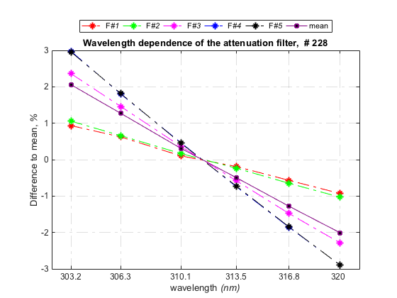 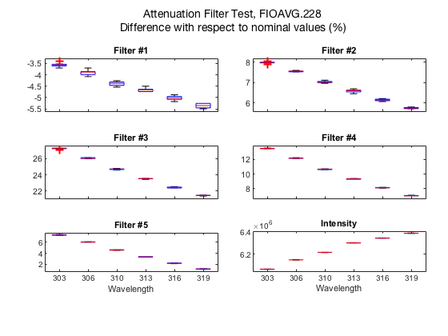 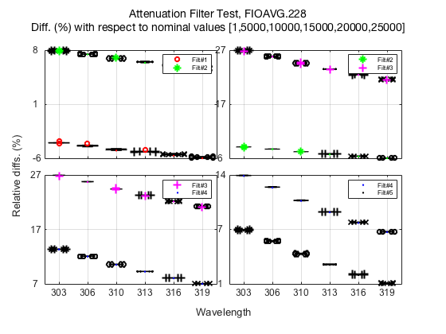 
close all